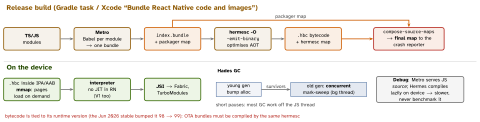

react-native · folio
In one line: Hermes is Meta’s JS engine built for RN start-up: the release build compiles JS to
bytecode (.hbc) with hermesc, so the phone mmaps and interprets it — no parse,
no compile, small heap. Default since RN 0.70; the built-in JSC left core in 0.81.
Hermes V1 — new compiler + VM — was opt-in in 0.82 and is the default
since 0.84; it does not yet include native (“Static Hermes”) compilation or a JIT.
Download PDF Print view LaTeX source


How it works
- AOT, not JIT: parsing, scoping and optimisation happen on the build machine; the device only maps the file. Start-up (TTI) and memory win; peak CPU loses to a JIT engine — which an iOS app cannot use anyway (no writable+executable memory).
- The engine itself has more modes (AOT to bytecode or native, lazy compile, baseline JIT, mixable in one runtime); RN ships bytecode + interpreter.
- Hades: generational; the old generation is marked and swept concurrently on a background thread, so GC pauses stay short on the JS thread.
- Is it Hermes?
global.HermesInternal— but that also exists when running source; prove.hbcin a release build. - Memory: mapped bytecode is clean, file-backed memory — the OS can drop and re-read those pages; a parsed AST or JIT code would be dirty heap.
Hermes V1 — what changed
- “Next evolution”: improved compiler and VM. Versioned like
250829098.0.x(packagehermes-compiler); legacy Hermes is0.15.0. - Measured on Expensify (0.82 post): bundle load 3.2% faster on low-end Android, 9% on iOS; total TTI 7.6% / 2.5%; content TTI 7.2% / 7.5%.
- Not in V1 yet: JS-to-native compilation (“Static Hermes”) and the JIT shown at RN EU 2023.
- Hermes stable
260318099.0.0(Jun 2026): Set methods,Object.groupBy, iterator helpers,Promise.withResolvers, fasterJSON; bytecode 99.
Opt in / opt out
| RN | How |
|---|---|
| 0.82–0.83 opt in | hermesV1Enabled=true (gradle.properties) · iOS
RCT_HERMES_V1_ENABLED=1 bundle exec pod install · pin hermes-compiler in
resolutions/overrides; needs RN built from source (not prebuilt) |
| 0.84+ opt out | overrides: {"hermes-compiler": "0.15.0"} · iOS
RCT_HERMES_V1_ENABLED=0 RCT_USE_PREBUILT_RNCORE=0 · Android
hermesV1Enabled=false + RN from source |
| JSC | 0.79: moved to @react-native-community/javascriptcore; 0.81: built-in removed |
Example — what the release build does, by hand
npx react-native bundle --platform android --dev false \
--entry-file index.js --bundle-output out/index.bundle \
--sourcemap-output out/index.packager.map
hermesc -O -emit-binary -output-source-map \
-out out/index.hbc out/index.bundle # + out/index.hbc.map
node node_modules/react-native/scripts/compose-source-maps.js \
out/index.packager.map out/index.hbc.map -o out/index.map
// at runtime: which engine, which version?
const isHermes = () => !!global.HermesInternal;
HermesInternal.getRuntimeProperties()['OSS Release Version'];Debugging and profiling
- React Native DevTools speaks CDP to Hermes on the device: breakpoints, console, heap snapshots; 0.83 added Network and Performance panels and a desktop app. (The old “debug in Chrome” ran JS in the browser — gone.)
- Production stacks are bytecode offsets (
index.android.bundle:1:48213): upload the composed map per build and per OTA update (iOS:SOURCEMAP_FILEin the bundle phase(unverified)). - Profile a release-like build: Android
debugOptimized(0.82) keeps DevTools with C++ optimised — about 60 vs 20 FPS againstdebug.
Traps
- “Hermes V1 = Static Hermes” — no: V1 has neither native compilation nor the JIT.
- Benchmarking in debug measures lazy source compilation, not
.hbc. - A packager map alone does not decode Hermes stacks — compose it with hermesc’s.
- Upgrading to 0.81+ with JSC? Add the community package or the build loses it.
- Hermes needs no JIT to be fast at start; CPU-heavy loops are its weak spot — move them native (TurboModule) or to a worklet.
Remember
“Compile on the Mac, map on the phone, compose the maps.” V1: opt-in 0.82, default 0.84.